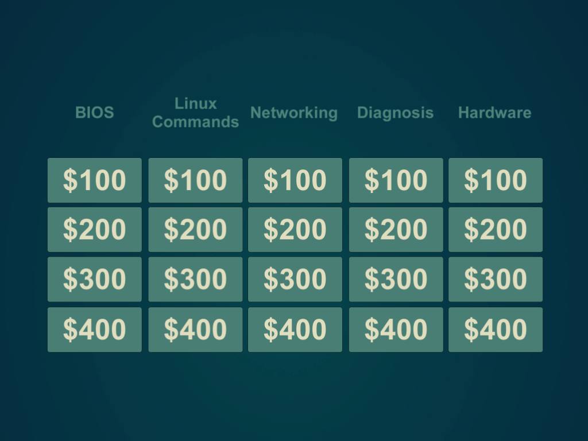
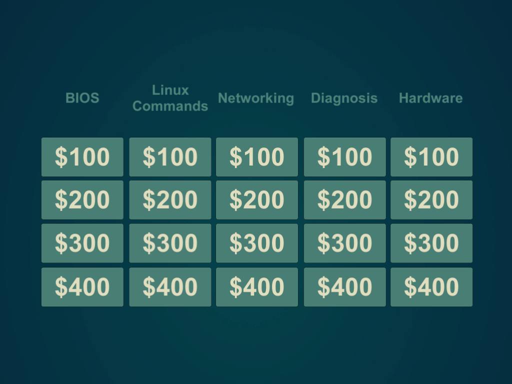

A knock-off Jeopardy game that uses questions related to the CompTIA A+ certification. Created in Unity 2017.4.1f1.
//Imports
using System.Collections;
using System.Collections.Generic;
using UnityEngine.SceneManagement;
using UnityEngine;
using Mono.Data.Sqlite;
using System.Data;
using System;
public class Gameplay : MonoBehaviour {
/* Handles the game play mechanics of the category board, question and answer screens
* -Derived from MonoBehavior class to handle Unity scripting features
* (Called by EventSystem of the Board scene) */
//Variable Declarations
public static int pointTotal; //Keeps running point total for endgame
int points; //stores point total for last button pressed
System.Random rnd = new System.Random (); //random number generation
string sqlQuery; //holds SQL query for passing into Query function
int questionID; //stores ID of current question for answer parsing
int questioncount = 0; //stores number of questions answered for endgame checking
string guess; //stores current guess for check against query result
void Start () {
/* Initializes the game
* Screen handling uses groups of objects to display question, answer and board
* positioning them into the FOV of the camera. This order to minimizes the need for
* communication between scenes and remembering which buttons have been deactivated
* between repetitive reloads of each screen
* (Called by loading the "Game" scene */
//Make sure Question and Answer screens are not displayed
GameObject.FindGameObjectWithTag ("Question")
.transform.position = new Vector3 (-1000.0f, -1000f, 0.0f);
GameObject.FindGameObjectWithTag ("Answer")
.transform.position = new Vector3 (-1000.0f, -1000f, 0.0f);
//set points and point total to zero
points = 0;
pointTotal = 0;
}//end Start()
string Query (string sqlQuery, bool q) {
/* Queries the proper table for questions and answers
* -string sqlQuery - query built by calling function
* -bool q - true if query is for a question, false if query is for an answer
* -return result - text to be displayed on the next screen
* (Called from other functions inside of Gameplay.cs) */
string result;
//Path to SQLite3 database
string conn = "URI=file:" + Application.dataPath + "/DB/questions.db";
//Creates new Sqlite connection
IDbConnection dbconn = (IDbConnection)new SqliteConnection (conn);
//Opens a connection to the database
dbconn.Open ();
//Build the sql command using passed in string sqlQuery
IDbCommand dbcmd = dbconn.CreateCommand ();
dbcmd.CommandText = sqlQuery;
//Execute query
IDataReader reader = dbcmd.ExecuteReader ();
//List objects that hold results of the query
List qID = new List ();
List row = new List ();
//Reads each line of response and stores them in list objects
while (reader.Read ()) {
qID.Add (reader.GetInt32 (0));
row.Add (reader.GetString (1));
} //end while (reader.Read)
//If we are querying for a question, generate a random number from the results and
//return the corresponding question
//This allows for each category button to have multiple possible questions so it is
//not always the same game
if (q) {
int i = rnd.Next (0, row.Count);
questionID = qID [i];//Remember question ID for later answer query
result = row [i];
} //end if (q)
//If we are querying for an answer, check the guessed answer with all possible results
//associated with question ID
//This allows for multiple acceptible answers to each question based on spelling or
//grammatical additions
else {
//Default result is incorrect and displays first answer found in query as correct
result = "Incorrect!\n\nThe Answer was:\n" + row [0];
//for loop changes result to true if guess matches any of the returned answers
for (int i = 0; i < row.Count; i++) {
//match against .ToLower() so as not to discriminate correctness based on
//capitalization
if (row [i].ToLower () == guess.ToLower ()) {
pointTotal += points;
result = "For $"
+ points
+ " you are correct!\n\nTotal:\n $"
+ pointTotal; //show current point total
} //end if (row[i] == guess)
} //end for (i < row.Count) {
} //end else
//Close, dispose and clear reader and database connection
reader.Close ();
reader = null;
dbcmd.Dispose ();
dbcmd = null;
dbconn.Close ();
dbconn = null;
return result;
} //end Query()
public void ButtonPressed (UnityEngine.UI.Button btnPressed) {
/* Disables the button that was pressed and queries the database for a question matching
* its category and difficulty
* -Button btnPressed - the button that was pressed holds the category and difficulty
* information in a "tag"
* (Called by button press on category board) */
//Disable button pressed and clear text field
btnPressed.interactable = false;
btnPressed.GetComponentInChildren ().text = "";
//Increase question count (for end-game initiation)
questioncount += 1;
//Build query string
sqlQuery = "Select Q_ID, question from questions where CAT_ID = "
+ btnPressed.name.Substring (0, 1)
+ " AND Difficulty = "
+ btnPressed.name.Substring (2, 1) + ";";
points = int.Parse (btnPressed.name.Substring (2, 1)) * 100;
//Run query
string question = Query (sqlQuery, true);
//Set Question Text to query result
GameObject.FindGameObjectWithTag ("QText")
.GetComponentInChildren ().text = question;
} //end ButtonPressed()
public void CheckAnswer (UnityEngine.UI.InputField guessbox) {
/* Queries the database for the answer to the current question and parses it against the
* guess entered
* -InputField guessbox - the field containing the players guess
* (Called by button press on Question screen) */
//Sets guess for parse
guess = guessbox.text;
//resets guessbox text so it will say "Enter answer here..." again instead of the last
//answer entered
guessbox.text = "";
//Build query string
sqlQuery = "Select Q_ID, answer from answers where Q_ID = " + questionID + ";";
//Run query
string answer = Query (sqlQuery, false);
//Set Answer Text to Query result
GameObject.FindGameObjectWithTag ("AText")
.GetComponentInChildren ().text = answer;
} //end CheckAnswer()
public void CheckEndGame () {
/* Function "CheckEndGame" checks the questioncount to determine whether or not all of
* the questions have been answered
* (Called by button press on Answer Screen) */
//If player has answered all 20 questions, load the EndGame scene
if (questioncount == 20) {
SceneManager.LoadScene ("EndGame");
} //end if (questiocount == 20)
} //end CheckEndGame ()
} //end GamePlay class
 
